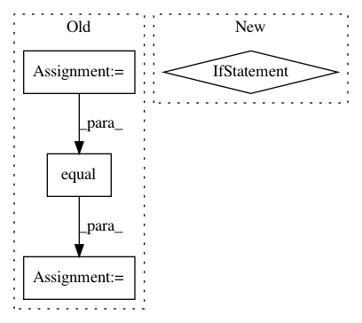

d0b03af329a2b2bf679ae33981f34636ce19690a,deepexplain/tensorflow/methods.py,,deepexplain_grad,#Any#Any#,162
Before Change
@ops.RegisterGradient("DeepExplainGrad")
def deepexplain_grad(op, grad):
mode = tf.get_default_graph().get_tensor_by_name("deepexplain_mode:0")
//mode = tf.Print(mode, [mode], "mode flag: ")
def default():
input = op.inputs[0]
return grad * grad_activation(op.name)(input)
cases = OrderedDict({
tf.equal(mode, 0): (lambda: DummyZero.nonlinearity_grad_override(op, grad)),
tf.equal(mode, 1): (lambda: Saliency.nonlinearity_grad_override(op, grad)),
tf.equal(mode, 2): (lambda: GradientXInput.nonlinearity_grad_override(op, grad)),
tf.equal(mode, 3): (lambda: IntegratedGradients.nonlinearity_grad_override(op, grad)),
tf.equal(mode, 4): (lambda: EpsilonLRP.nonlinearity_grad_override(op, grad)),
})
return tf.case(cases, default=default, exclusive=True)
After Change
@ops.RegisterGradient("DeepExplainGrad")
def deepexplain_grad(op, grad):
global _ENABLED_METHOD_CLASS
if _ENABLED_METHOD_CLASS is not None:
return _ENABLED_METHOD_CLASS.nonlinearity_grad_override(op, grad)
else:
return grad * grad_activation(op.name)(op.inputs[0])
class DeepExplain(object):
def __init__(self, graph=tf.get_default_graph(), sess=tf.get_default_session()):
self.method = None
In pattern: SUPERPATTERN
Frequency: 3
Non-data size: 4
Instances
Project Name: marcoancona/DeepExplain
Commit Name: d0b03af329a2b2bf679ae33981f34636ce19690a
Time: 2017-11-03
Author: marco.ancona@inf.ethz.ch
File Name: deepexplain/tensorflow/methods.py
Class Name:
Method Name: deepexplain_grad
Project Name: tensorflow/models
Commit Name: 64710c051f26a2778c03fc15ef29c4bcae01df32
Time: 2018-08-22
Author: reedwm@google.com
File Name: official/recommendation/ncf_main.py
Class Name:
Method Name: evaluate_model
Project Name: IBM/adversarial-robustness-toolbox
Commit Name: d6fca70d938e502efff15f6b71bf38cac7fcabbe
Time: 2017-06-06
Author: valentina.zantedeschi@ibm.com
File Name: src/attackers/deepfool.py
Class Name: DeepFool
Method Name: generate